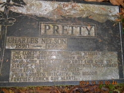

Charles Nelson Pretty 1890 - 1992
[ Home ] | [ Calendar ] | [ Surnames Index ] | [ Census Index ] | [ Family History ]Charles Pretty, the husband of Rowena Elizabeth Peters (the fourth cousin once-removed on the father's side of Nigel Horne), was born in Algoma, Ontario, Canada on Mar 7, 18901,2,3,4,5 and married Rowena (with whom he had 4 children: Charles Watson, Rowena Charlotte, James Ivan and Elizabeth Anne) in New Westminster, Vancouver, British Columbia, Canada on Oct 10, 19176.
During his life, he was living in New Westminster in 18911 and in British Columbia in 19017 which is where he died on Apr 6, 19922,5. In 1925 he traveled from Southampton, Hampshire, England to Halifax, Nova Scotia, Canada, arriving on 3 Dec with all of his children. He was buried at Pretty Family Private Cemetery, Harrison Mills, British Columbia after Apr 6, 19922,5.
Children
- Charles Watson was born in 1919
- Rowena Charlotte was born in 1923
- James Ivan was born in 1928
Citations
- 1891 Census of Canada Ancestry.com Operations Inc (Marital Status: Single; Relation to Head of House: Son)
- Canada, Find A Grave Index, 1600s-Current Ancestry.com Operations, Inc.
- Canadian Passenger Lists, 1865-1935 Online publication - Provo, UT, USA: Ancestry.com Operations Inc, 2010. .Original data - Passenger Lists, 1865–1935. Microfilm Publications T-479 to T-520, T-4689 to T-4874, T-14700 to T-14939, C-4511 to C-4542. Library and Archives Canada,n.d. RG 76-C. D
- Ontario Birth Index 1860-1920 - Findmypast
- Web: International, Find A Grave Index Ancestry.com Operations, Inc.
- British Columbia, Canada, Marriage Index, 1872-1935 Ancestry.com Operations Inc
- Canada Census 1901 - Findmypast (was the son of the head of the household)
Notes
Height: 5 ft 8 in.
Media
Charles Nelson Pretty - headstone

Passenger Lists leaving UK 1890-1960 Transcription - TNA-BT27-1108000041-00106
Idaho, Eastport Arrivals, 1900-1962 Transcription - US-PASSENGERLISTS-00003070732
Canada Census 1901 - CAN/CENSUS/1901/00050345
Ontario Birth Index 1860-1920 - R_21988233099
Family Tree

Generated by ged2site. Last updated on Jun 11, 2024